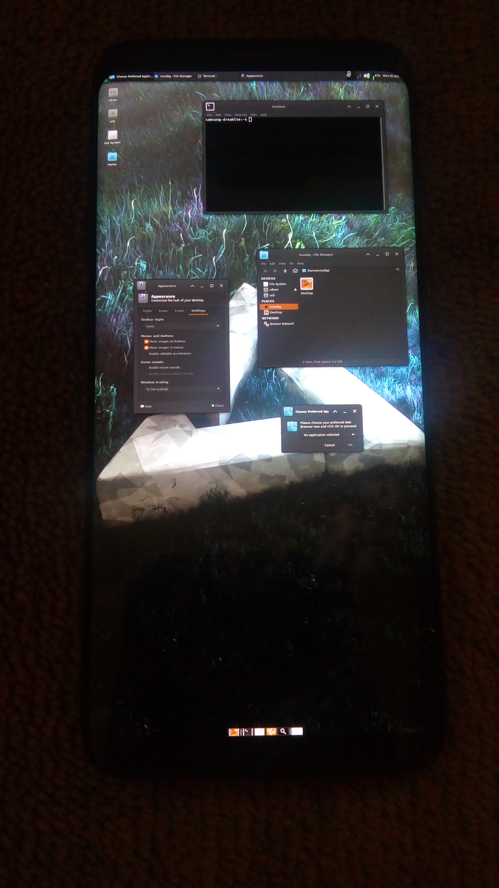

Samsung Galaxy S8 (samsung-dreamlte)
|

Samsung Galaxy S8 |
|
| Manufacturer | Samsung |
|---|---|
| Name | Galaxy S8 |
| Codename | samsung-dreamlte, samsung-dream2lte |
| Released | 2017 |
| Category | testing |
| Original software | Android 7.1 |
| postmarketOS kernel | 4.4.111 |
| Hardware | |
| Chipset | Exynos 8895 |
| CPU | 4x 2.3 GHz Mongoose M2 & 4x 1.7 GHz Cortex-A53 |
| GPU | Mali-G71 MP20 |
| Display | 1440 x 2960 Super AMOLED |
| Storage | 64 GB |
| Memory | 4 GB |
| Architecture | aarch64 |
| Unixbench Whet/Dhry score | 4559.4 |
{kind=link}
| USB Networking |
Works
|
|---|---|
| Flashing |
Works
|
| Touchscreen |
Works
|
| Display |
Works
|
| WiFi |
Works
|
| FDE |
Partial
|
| Mainline |
Partial
|
| Battery |
Works
|
| 3D Acceleration |
Broken
|
| Audio |
Broken
|
| Bluetooth |
Broken
|
| Camera |
Broken
|
| GPS |
Broken
|
| Mobile data |
Broken
|
| SMS |
Broken
|
| Calls |
Broken
|
| USB OTG |
Works
|
| NFC |
|
| Accelerometer |
|
|---|---|
| Magnetometer |
|
| Ambient Light |
|
| Proximity |
|
| Hall Effect |
|
| Barometer |
|
| Power Sensor |
|
| Keyboard |
|
|---|---|
| Touchpad |
|
| USB-A |
|
| HDMI/DP |
|
| Ir TX |
|
| TrustZone |
|
| FOSS bootloader |
|
Contributors
Maintainers
Users owning this device
- Dhruv22592 ( Notes: Samsung Galaxy S8+ as Main Phone, has PostmarketOS with SXMO installed.)
- Drebrez
- Ivoszbg
- Kachiyama Nao ( Notes: With cracked, but working screen)
- Kaffeine
- Lachtan999
- Silence
- Tacokoneko ( Notes: Samsung Galaxy S8+ International (dream2lte))
How to enter recovery/odin mode
- Press and hold Bixby Key + Volume Down + Power simultaneously while device is powered off for odin mode
- Press and hold Bixby Key + Volume Up + Power simultaneously while device is powered off for recovery mode.
What works
- Phone boots
- Touchscreen
- Framebuffer with msm-fb-refresher
- Phone is charging and battery status is working
- Volume and power buttons on gnome
-
Weston,
GNOME(no longer works), Sxmo, Xfce4, MATE - Screen brightness changing on (at least) mate, sxmo and xfce (see Screen brightness )
- USB OTG Devices (Keyboards, USB Hubs, Mouse, Flash drives, USB Wireless headset (tested with Razer Nari), Portable Music Players (tested with Samsung YP-U4) (tested all in SXMO))
- Wifi with firmware package
- Mainline (WIP)
Installation
2. Unlock the bootloader and flash twrp
3. Setup pmbootstrap:
$ pmbootstrap init
...
Vendor [samsung]: samsung <- enter this
Device codename [dream]: dream <- enter this
Available kernels (2):
* dreamlte: Kernel for the Samsung Galaxy S8
* dream2lte: Kernel for the Samsung Galaxy S8+
Kernel [dreamlte]: dreamlte <- choose your device model
User interface [weston]: <- choose your preferred UI
...
4. Create a twrp flashable .zip
$ pmbootstrap install --android-recovery-zip --recovery-install-partition=data
5. Installation_from_recovery_mode
Wifi
To connect to a wifi the same steps as for the Medion Lifetab S9714 (medion-kai) works:
1. Verify that the wlan0 interface exists
$ ip link
2. Turn on wifi
$ nmcli radio wifi on
3. List available wifis
$ nmcli device wifi list
4. Connect to your wifi
$ nmcli device wifi connect "$SSID" password "$PASSWORD"
5. Verify that you have been given an ip address on the wlan0, or swlan0, interface
$ ip a
or if you are using SXMO, just run
# nmtui
select "Activate a connection" and connect to your wifi.
Screen brightness
On mate or sxmo the screen brightness can be changed with:
echo a value between 0 and 36600
# echo 18300 > /sys/devices/platform/panel_drv@001/backlight/panel/brightness
On xfce you can run set the brightness with xfpm-power-backlight-helper:
set a value between 0 and 100
# pkexec xfpm-power-backlight-helper --set-brightness 50
USB OTG keyboard
Connecting a USB keyboard does not work (tested on xfce). The keyboard shows up in dmesg and lsusb correctly, and
# libinput list-devices
shows it. However,
$ xinput list
does not show it, and it is not recognised in /var/log/Xorg.log.
elogind-daemon reports something like
Watching system buttons on /dev/input/event8 (keyboard name)
in dmesg when the keyboard is connected. Maybe elogind is "hogging" the keyboard? Patching elogind to ignore the device does not make a difference though, X still does not recognise the keyboard.
however, in SXMO the USB Keyboard works as expected.
USB OTG mouse
Connecting a USB mouse works (tested on sxmo). The mouse shows up in dmesg and lsusb correctly, and
# libinput list-devices
shows it and
$ xinput list
also shows it. However, the mouse cursor appears to be invisible in SXMO.
Audio
Audio (tested on SXMO) does not work. According to
$ aplay -l
**** List of PLAYBACK Hardware Devices ****
card 0: Exynos8895Mader [Exynos8895-Madera], device 0: RDMA0 (*) []
Subdevices: 1/1
Subdevice #0: subdevice #0
card 0: Exynos8895Mader [Exynos8895-Madera], device 1: RDMA1 (*) []
Subdevices: 1/1
Subdevice #0: subdevice #0
card 0: Exynos8895Mader [Exynos8895-Madera], device 2: RDMA2 (*) []
Subdevices: 1/1
Subdevice #0: subdevice #0
card 0: Exynos8895Mader [Exynos8895-Madera], device 3: RDMA3 (*) []
Subdevices: 1/1
Subdevice #0: subdevice #0
card 0: Exynos8895Mader [Exynos8895-Madera], device 4: RDMA4 (*) []
Subdevices: 1/1
Subdevice #0: subdevice #0
card 0: Exynos8895Mader [Exynos8895-Madera], device 6: RDMA6 (*) []
Subdevices: 1/1
Subdevice #0: subdevice #0
card 0: Exynos8895Mader [Exynos8895-Madera], device 7: RDMA7 (*) []
Subdevices: 1/1
Subdevice #0: subdevice #0
card 0: Exynos8895Mader [Exynos8895-Madera], device 22: DP Audio snd-soc-dummy-dai-22 []
Subdevices: 1/1
Subdevice #0: subdevice #0
the card shows up as Exynos8895Mader but it does not work. This was tested by running
$ speaker-test
speaker-test 1.2.5.1
Playback device is default
Stream parameters are 48000Hz, S16_LE, 1 channels
Using 16 octaves of pink noise
Playback open error: -16,Resource busy
and
$ aplay /usr/share/sounds/alsa/Front_Center.wav
aplay: main:831: audio open error: Resource busy
Sensors
$ sudo apk add linux-tools-iio
$ lsiio
Device 010: light_flicker_sensor
Device 011: proximity_sensor
Device 012: proximity_alert_sensor
Device 013: rotation_vector_sensor
Device 014: game_rotation_vector
Device 015: sig_motion_sensor
Device 016: step_det_sensor
Device 017: step_cnt_sensor
Device 018: tilt_detector
Device 019: pickup_gesture
Device 020: scontext_iio
Device 021: light_cct_sensor
Device 022: uncal_accel_sensor
Device 023: meta_event
Device 024: wake_up_motion
Device 000: 15b70000.adc
Device 001: accelerometer_sensor
Device 002: geomagnetic_sensor
Device 003: uncal_geomagnetic_sensor
Device 004: gyro_sensor
Device 005: uncal_gyro_sensor
Device 006: interrupt_gyro_sensor
Device 007: pressure_sensor
Device 008: light_sensor
Device 009: light_ir_sensor
| Note: Sensors might not work out-of-the-box, more work is required! |
Additional info
Partition layout
# fdisk -l /dev/block/sda
Note: sector size is 4096 (not 512)
Found valid GPT with protective MBR; using GPT
Disk /dev/block/sda: 124928000 sectors, 576M
Logical sector size: 4096
Disk identifier (GUID): 52444e41-494f-2044-4d4d-43204449534b
Partition table holds up to 128 entries
First usable sector is 6, last usable sector is 15615994
Number Start (sector) End (sector) Size Code Name
1 1024 2047 4096K 0700 BOTA0
2 2048 3071 4096K 0700 NA
3 3072 8191 20.0M 0700 EFS
4 8192 10239 8192K 0700 PARAM
5 10240 12287 8192K 0700 UP_PARAM
6 12288 14335 8192K 0700 BOTA2
7 14336 24575 40.0M 0700 BOOT
8 24576 36351 46.0M 0700 RECOVERY
9 36352 38399 8192K 0700 BOTA1
10 38400 49151 42.0M 0700 RADIO
11 49152 49407 1024K 0700 TOMBSTONES
12 49408 49663 1024K 0700 DNT
13 49664 49791 512K 0700 PERSISTENT
14 49792 50047 1024K 0700 MISC
15 50048 51071 4096K 0700 STEADY
16 51072 55167 16.0M 0700 KEYREFUGE
17 55168 1168767 4350M 0700 SYSTEM
18 1168768 1296767 500M 0700 CACHE
19 1296768 1299327 10.0M 0700 HIDDEN
20 1299328 1312127 50.0M 0700 OMR
21 1312128 1313407 5120K 0700 CP_DEBUG
22 1313408 1318527 20.0M 0700 NAD_FW
23 1318528 1318783 1024K 0700 NAD_REFER
24 1318784 15614847 54.5G 0700 USERDATA
Unixbench results
========================================================================
BYTE UNIX Benchmarks (Version 5.1.3)
System: samsung-dreamlte: Linux
OS: Linux -- 4.4.111 -- #1-postmarketOS SMP PREEMPT Thu Nov 12 22:35:19 UTC 2020
Machine: aarch64 (unknown)
Language: en_US.utf8 (charmap=, collate=)
02:23:52 up 2 min, load average: 8.04, 3.89, 1.52; runlevel
------------------------------------------------------------------------
Benchmark Run: Sat Nov 14 2020 02:23:52 - 02:28:42
8 CPUs in system; running 1 parallel copy of tests
Dhrystone 2 using register variables 10703098.1 lps (10.0 s, 7 samples)
Double-Precision Whetstone 4156.1 MWIPS (9.9 s, 7 samples)
System Benchmarks Partial Index BASELINE RESULT INDEX
Dhrystone 2 using register variables 116700.0 10703098.1 917.1
Double-Precision Whetstone 55.0 4156.1 755.7
========
System Benchmarks Index Score (Partial Only) 832.5
------------------------------------------------------------------------
Benchmark Run: Sat Nov 14 2020 02:28:42 - 02:33:36
8 CPUs in system; running 8 parallel copies of tests
Dhrystone 2 using register variables 55058190.3 lps (10.0 s, 7 samples)
Double-Precision Whetstone 24234.1 MWIPS (10.4 s, 7 samples)
System Benchmarks Partial Index BASELINE RESULT INDEX
Dhrystone 2 using register variables 116700.0 55058190.3 4717.9
Double-Precision Whetstone 55.0 24234.1 4406.2
========
System Benchmarks Index Score (Partial Only) 4559.4
Mainline
It boots! However only very limited hardware has support for now.
Note
GNOME no longer works, it shows GDM and after you log in with GNOME (wayland) it turns the screen off. Selecting GNOME on Xorg and logging in will immeditately send you back to GDM.